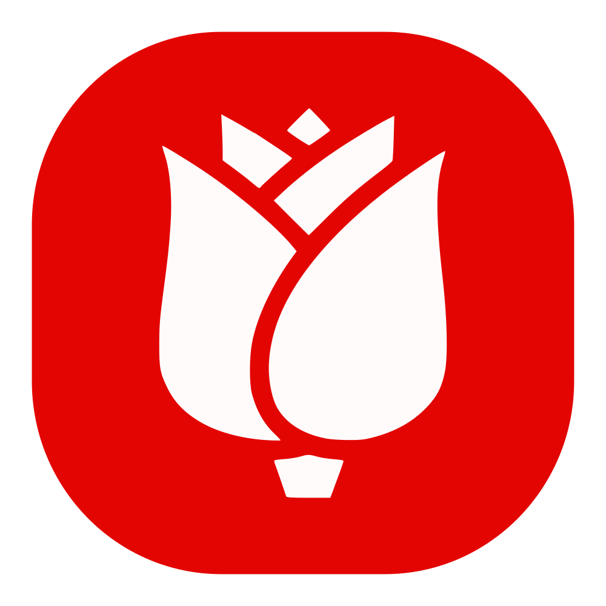
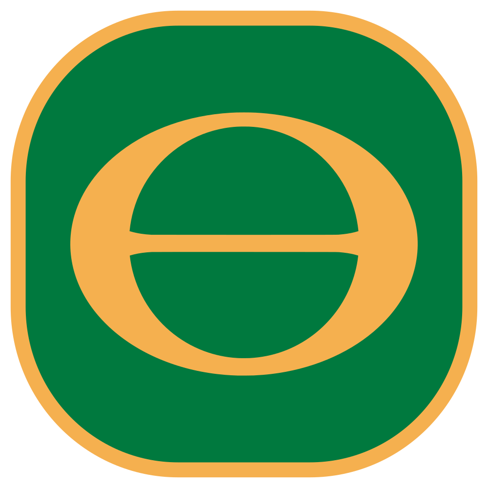
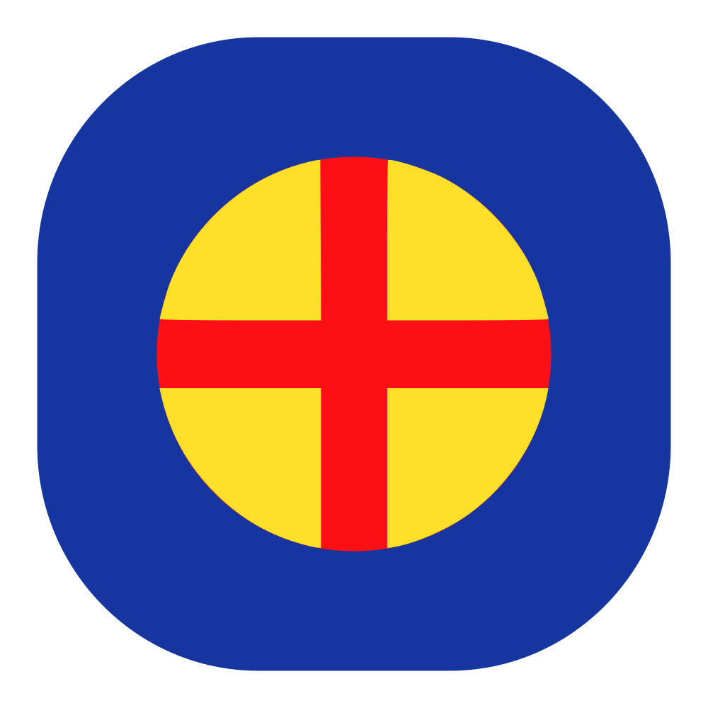
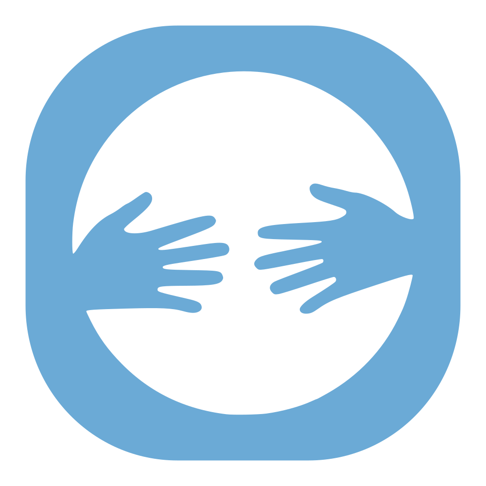
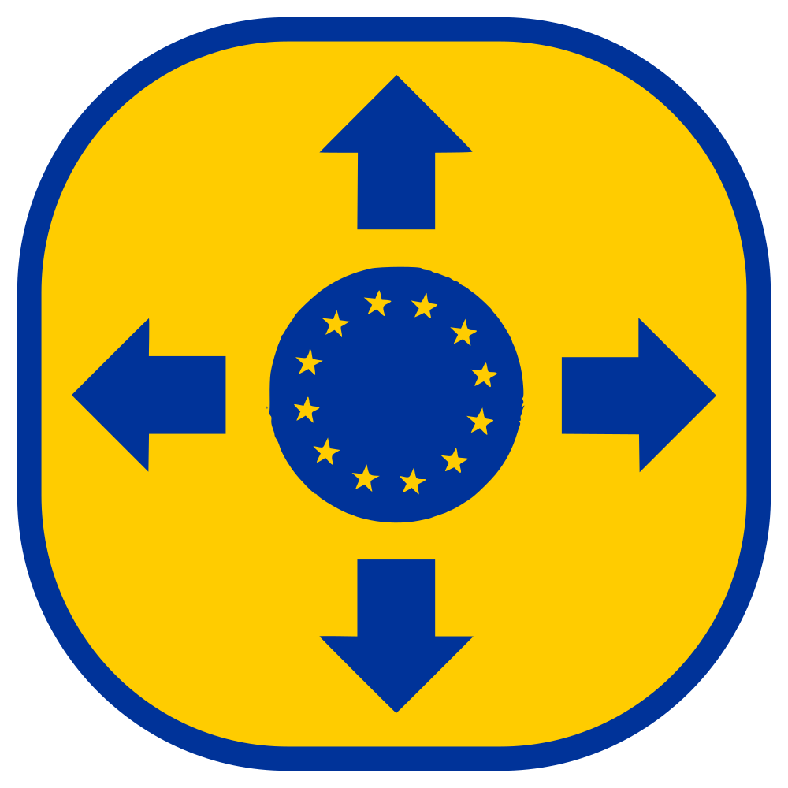
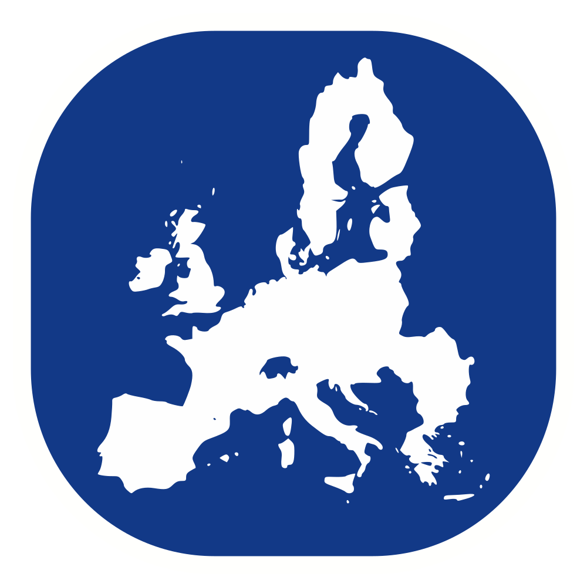

No need to screenshot — you can save or download the generated results card below!

Socialism
Ecologism
Continentalism
Sanctuary
Beyond
WithinThe 10 European nations whose political landscape aligns most closely with your values:
The 5 European Parliament political groups whose platform aligns most closely with your values: